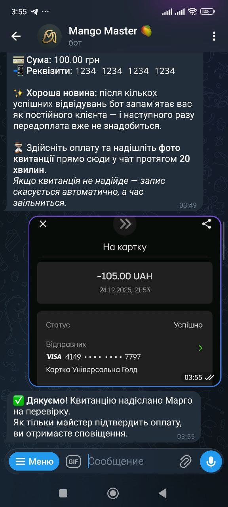

01
Запис 24/7 без зайвої переписки
Клієнт сам обирає послугу, дату та час у боті — без довгих уточнень у чаті.
Mango Master допомагає приймати записи 24/7, показувати вільні вікна, нагадувати клієнтам про візит, працювати з передоплатою та повертати клієнтів через розсилки.
Постійні переписки, уточнення по часу, ручні нагадування, пропущені повідомлення, порожні вікна в графіку та клієнти, які просто забули про запис — усе це забирає сили, які краще витрачати на роботу, а не на хаос в організації.
Бот допомагає клієнту самостійно записатися у зручний час, а майстру — тримати під контролем графік, клієнтів, передоплату, нагадування та повторні візити без нескінченної ручної переписки.
Клієнт сам обирає послугу, дату та час у боті — без довгих уточнень у чаті.
Бот спочатку показує 5 найближчих доступних слотів, а далі клієнт може відкрити весь календар.
Передоплату можна вмикати або вимикати, брати лише з нових клієнтів і не вимагати від постійних.
Автоматичні повідомлення за 24 години та за 2 години до візиту.
Можна написати всім, тим, хто давно не приходив, або потрібному сегменту бази.
Майстер бачить записи, може переносити їх, відмічати візит або неявку та додавати клієнтів вручну.
Система допомагає уникати перетинів у розкладі, щоб один і той самий час не зайнявся двічі.
Клієнт бачить, що входить у послугу ще до вибору часу, тому зайвих запитань і непорозумінь стає менше.
Майстер може додавати до послуги додаткові опції з окремою ціною та тривалістю, якщо це потрібно в роботі.
Можна задати паузу між клієнтами, щоб графік був реалістичним і не складався впритул.
Клієнт бачить картку майстра, може переглянути інформацію про послуги, локацію, портфоліо, вибрати потрібну процедуру та одразу перейти до запису.
Щоб клієнт не губився в зайвому, бот одразу показує найближчі доступні вікна. Якщо цього недостатньо, можна відкрити весь календар і самостійно вибрати дату та час.
У Mango Master ви самі вирішуєте, коли передоплата потрібна, а коли ні. Це допомагає захистити графік від несерйозних записів, але не створює зайвих бар’єрів для постійних клієнтів.

Бот автоматично нагадує клієнту про запис за 24 години та за 2 години до візиту. Це допомагає зменшити кількість випадків, коли людина просто забула про сеанс, і знімає з майстра зайву рутину.
Після першого сеансу через 2 години клієнт отримує повідомлення з проханням оцінити якість послуги. Це допомагає краще розуміти враження клієнтів і поступово зміцнювати довіру до сервісу.
Mango Master допомагає не тільки приймати записи, а й краще налаштовувати саму логіку роботи: без накладок, без зайвих запитань від клієнтів і без графіка, складеного впритул.
Система допомагає не допустити накладок у графіку та перетинів по часу.
Клієнт одразу бачить, що входить у процедуру, ще до запису.
До послуги можна додавати додаткові опції з окремою ціною та тривалістю.
Пауза між записами допомагає зробити графік реалістичним і комфортним.
Mango Master дозволяє робити розсилки по базі клієнтів і швидко звертатися до тих, хто давно не приходив. Це зручно, коли потрібно заповнити вільне вікно, нагадати про себе або повернути частину бази без ручної переписки з кожним окремо.
Mango Master зберігає інформацію про клієнтів: ім’я, телефон, кількість візитів, історію записів, дату останнього візиту та нотатки. Це допомагає працювати з базою не навмання, а системно.

У боті видно записи по днях, тижнях і місяцях. Майстер може швидко відмічати, хто прийшов, хто не з’явився, кого потрібно перенести, а також вручну додавати нових клієнтів у графік.

Клієнт може одразу переглянути роботи майстра перед записом. Це допомагає швидше прийняти рішення і підсилює довіру ще до першого візиту.

Спробуйте бот у роботі без поспіху — перші 14 днів безкоштовно.
Зручно, якщо хочете просто почати і подивитися, як бот працює у щоденній роботі.
Оптимальний варіант для стабільної роботи без зайвих оплат щомісяця.
Підійде тим, хто хоче одразу закрити питання з записом надовше.
Так. Клієнт бачить найближчі доступні вікна, а за потреби може відкрити весь календар і вибрати зручний час.
Ні. Передоплату можна повністю вимкнути або використовувати тільки для нових клієнтів.
Так. Для постійних клієнтів можна залишити запис без передоплати.
Так. Майстер може самостійно додавати записи в графік, коли це потрібно в роботі.
Так. Бот надсилає клієнту нагадування за 24 години та за 2 години до візиту.
Так. У боті є розсилки по базі клієнтів, зокрема для тих, хто давно не приходив.
Підключіть Mango Master і спробуйте, як може виглядати запис без хаосу, ручних нагадувань і зайвої переписки.